18. 구조체와 연결 리스트
18-1. typedef 문법
typedef 문법 사용하기
- 구조체를 배우기 전에 먼저 알아야 할 문법이 있다.
- 바로
typedef문법이다. typedef는 타입을 정의한다는 의미의 'type define'의 줄임 표현이며, 기존의 자료형 중에 자료형 이름이 길이가 긴 경우 프로그래머가 짧고 간결하게 자료형을 재정의하는 문법이다.#define과 기능이 비슷해 보이지만#define은 치환 작업을 수행하는 전처리기이고typedef는 기존 자료형을 다른 이름으로 새롭게 정의하는 기능이다.
기존 자료형을 단순한 형태의 새 자료형으로 바꾸기
typedef문법이 가장 흔하게 사용되는 경우는 기존 자료형의 이름이 너무 길어서 새로운 자료형으로 재정의해야 할 때이다.- 예를 들어 프로그램에서
unsigned short int형을 많이 사용하는데 자료형의 이름이 너무 길면 쓸 때마다 번거로울 것이다. - 그래서
US라는 이름으로 줄여서 사용하고 싶다면, 다음과 같이typedef키워드를 사용하면 된다는 것이다.
typedef unsigned short int US; // unsigned short int형을 US라는 새로운 이름으로 정의함
US temp; // unsigned short int temp; 라고 선언한 것과 같음
unsigned short int형을typedef로 새롭게 정의할 때UINT라고도 많이 사용한다.- 그런데 특정 헤더 파일에
UINT가 이미 정의되어 있는 경우도 있어서 중복 정의 오류가 발생하지 않도록US라는 이름을 사용한다. - 위의 형식을 보면
typedef키워드를 뺀 나머지 부분이 변수를 선언하는 형태와 같다는 특징이 있다. - 그래서 변수 선언과 착각하지 않도록 새 자료형의 이름을 대문자로 적는 경우가 많다.
/* typedef로 정의한 자료형으로 변수 선언하기 */
#include
<stdio.h>
// unsigned short int형을 US라는 새로운 이름으로 정의함
typedef unsigned short int US;
void main() {
unsigned short int data = 5;
US temp; // unsigned short int temp;와 같음
temp = data;
printf("temp = %d\n", temp);
}
temp = 5
typedef의 장점 1: 복잡해 보이는 문법을 쉽게 표현할 수 있다
typedef는 일반 변수 형식뿐만 아니라 배열, 포인터와 같은 형식도 재정의할 수 있다.- 예를 들어 다음과 같이 특정 배열을 하나의 자료형처럼 재정의할 수 있다는 뜻이다.
typedef int MY_DATA[5];
MY_DATA temp; // int temp[5];라고 선언한 것과 같음
MY_DATA가 int[5]형태를 치환한 것임을 어떻게 알 수 있을까?
typedef문법으로 자료형을 재정의하면 원래의 자료형이 무엇이었는지 찾기 어렵진 않을까?- 요즘에는 개발 환경이 좋아져서 재정의한 자료형 위에 마우스를 올려 놓으면 정의를 확인할 수 있다.
- 다만 새롭게 정의했다는 의미를 전달하기 위해 새로 정의한 자료형이나 상수에 대한 치환 값은 전체 문자를 모두 대문자로 짓는 것이 일반적이다.
- 따라서 자료형이 전부 대문자라면 '무언가 새로 정의되거나 치환된 것이구나'라고 생각하면 될 것 같다.
- 사실, 앞의 예제처럼 배열을 치환하는 형태는 특별한 이점이 없어 보인다.
- 하지만 다음 코드를 보자.
int (*p)[5];
- 위와 같이 포인터를 선언하면 20바이트(
int[5])의 사용 범위를 가지는 포인터 변수가 만들어 진다. - 즉 포인터 변수
p의 크기는 4바이트이며 자신이 가리킬 대상의 크기는int[5]라는 뜻이다. - 이 선언이 복잡해 보이는 이유는 연산자 우선순위 때문에 괄호
()까지 사용해서 그렇다. - 위의 선언을
typedef를 사용해서 다시 선언해 보자.
typedef int MY_DATA[5];
MY_DATA *p; // int (*p)[5]; 라고 선언한 것과 같음
MY_DATA *p;라고 적은 코드에서p변수는 누가 봐도 포인터 변수이다.- 그리고 포인터 변수
p가 가리키는 대상의 크기는MY_DATA, 즉int[5]이다. - 이렇듯 문법을 이해하기 힘들거나 자료형이 너무 복잡하게 적용되었을 때
typedef를 사용하면 좀 더 보기 편한 형태로 사용할 수 있다.
typedef의 장점 2: 자료형의 크기를 쉽게 바꿀 수 있다
- 우리가 기존에 사용하던
char,int와 같은 기본 자료형은 운영체제에 따라 크기가 1바이트, 4바이트로 고정되어 있다. - 따라서 다음과 같이
char로 선언한age변수의 크기는 1바이트 이기 때문에 이 변수의 크기를 2바이트로 변경하려면 자료형을short int로 변경해야 한다.
// age 변수의 크기를 1바이트에서 2바이트로 변경해야 하는 경우
char age; -> short int age;
- 그런데 이 변수가 한 번만 사용된 것이 아니라 소스 코드 전체에서 여러 번 사용되었다면 어떨까?
/* typedef 문법을 사용하지 않았을 때 */
#include
<stdio.h>
// 나이를 출력하는 함수
void ShowAge(char age) {
...
}
// 해당 나이인 사람의 수를 반환하는 함수
int FindAge(char age) {
...
}
void main() {
char age;
ShowAge(age);
FindAge(10);
}
/* typedef 문법을 사용했을 때 */
#include
<stdio.h>
// typedef 문법으로 char 자료형 재정의 함
typedef char AGE;
// 나이를 출력하는 함수
void ShowAge(AGE age) {
...
}
// 해당 나이인 사람의 수를 반환하는 함수
int FindAge(AGE age) {
...
}
void main() {
AGE age; // char age; 와 같음
ShowAge(age);
FindAge(10);
}
typedef문법으로 자료형을 재정의한 부분만 수정해서 자료형의 크기를 2바이트로 변경할 수 있기 때문에AGE로 선언한 모든 변수를 한꺼번에 2바이트로 변경한 것과 마찬가지 결과를 보여 준다.
typedef char AGE; -> typedef short int AGE;
AGE age; // short int age; 라고 선언한 것과 같음
- 결론적으로
typedef를 사용하면 데이터의 크기에 변화가 생겼을 때 쉽게 대처할 수 있다.
18-2. 데이터를 그룹으로 묶는 구조체
비슷한 형태의 데이터를 관리하려면?
- 사람 5명의 나이, 키, 몸무게를 관리하는 프로그램을 만든다고 가정하자.
- 총 15개의 변수가 필요하다.
int age1, age2, age3, age4, age5; // 5명의 나이를 저장할 변수
float height1, height2, height3, height4, height5; // 5명의 키를 저장할 변수
float weight1, weight2, weight3, weight4, weight5; // 5명의 몸무게를 저장할 변수
- 5명의 나이, 키, 몸무게를 사용자에게 입력 받으려면 변수마다 각각 하나씩 입력 받아야 하기 때문에 다음과 같은 작업을 해야 한다.
scanf("%d", &age1); // 첫 번째 사람의 나이를 입력 받음
scanf("%d", &age2); // 두 번째 사람의 나이를 입력 받음
scanf("%d", &age3); // 세 번째 사람의 나이를 입력 받음
scanf("%d", &age4); // 네 번째 사람의 나이를 입력 받음
scanf("%d", &age5); // 다섯 번째 사람의 나이를 입력 받음
- 이렇게 일일이 입력 받다 보면 작성해야 하는 코드가 많아지고, 나중에 코드를 변경하거나 다른 데이터를 추가할 때 문제가 될 수 있다.
데이터의 그룹화 1: 배열
- 배열을 사용하면 같은 형태의 데이터를 묶어서 관리할 수 있다.
- 위에서 선언한 변수들을 배열을 사용해서 다시 선언해 보자.
- 다음과 같이 선언하면 변수를 개별적으로 선언하는 것보다 코드가 훨씬 간단해진다.
int age[5]; // 5명의 나이를 저장할 age 배열
float height[5]; // 5명의 키를 저장할 height 배열
float weight[5]; // 5명의 몸무게를 저장할 weight 배열
- 그리고 배열은 각 요소에 값을 대입하거나 읽을 때 색인을 사용한다.
- 색인은 상수뿐만 아니라 변수도 사용할 수 있기 때문에 반복문을 적용하여 데이터를 좀 더 편리하게 관리할 수 있다.
- 예를 들어 사용자에게 5명의 나이를 입력 받는 코드를 반복문을 사용해서 구성해 보면 다음과 같다.
int i;
for (i = 0; i < 5; i++) scanf("%d", age + i); // 5번 반복하면서 나이를 입력 받음
- 변수를 개별적으로 사용할 때는
scanf함수를 5번 사용했는데, 데이터를 그룹으로 묶어서 사용하면 반복문에서scanf함수를 한 번만 적으면 되기 때문에 코드를 작성하기가 훨씬 편리해진다. - 이처럼 같은 형식의 데이터를 여러 개 처리할 때는 배열처럼 그룹으로 묶어서 관리하는 것이 좀 더 바람직한 프로그래밍 방법이다.
- 위의 예제에서
age + i는&age[i]를 줄여 쓴 것이며,age배열의i번째 요소가 저장된 메모리 주소를 의미한다.
배열의 한계
- 배열은 크기가 같은 데이터만 그룹으로 묶을 수 있다.
- 따라서
int형인 나이끼리 묶거나float형인 키 또는 몸무게끼리 묶는 것처럼 같은 종류의 데이터를 묶을 때 많이 사용한다. - 나이, 키, 몸무게 같은 데이터는 결국 한 사람이 가지고 있는 정보이다.
- 그래서 특정 사람의 정보를 모아서 하나의 그룹으로 만드는 것이 좋다.
- 왜냐하면 결국 프로그램은 데이터를 입력 받거나 출력할 때 사람 단위로 처리할 확률이 높기 때문이다.
- 요소별로 출력하는 경우도 분명히 있다.
- 하지만 데이터를 관리하는 입장에서 봤을 때 개인별로 출력할 확률이 높기 때문에 데이터를 개인 단위로 묶어서 그룹으로 만드는 것을 추천하는 것이다.
- 그러면 크기나 형식이 다른 데이터를 어떻게 묶어서 사용할 수 있을까?
데이터의 그룹화 2: 구조체
- C 언어는 크기나 형식이 다른 데이터를 그룹으로 묶어 사용할 수 있도록 '구조체'(Structure)문법을 제공한다.
- 구조체는 기본 자료형이나 사용자가 정의한 자료형을 그룹으로 묶어서 새로운 자료형을 만들 수 있다.
- 그래서 구조체는 다양한 형태의 메모리 구조를 만들 수 있다.
구조체로 새로운 자료형 만들기
- 구조체는 다음과 같은 형식으로 새로운 자료형을 정의한다.
struct 구조체 이름 {
자료형1 변수 이름1;
자료형2 변수 이름2;
자료형3 변수 이름3;
...
};
- 구조체 문법을 사용한다고 컴파일러에 알리기 위해
struct키워드로 시작하며 그다음에 구조체 이름을 적는다. - 이 이름은 우리가 새로 정의할 자료형의 이름(
int,char같은 역할)이다. - 그리고 중괄호
{}안에 이 자료형을 구성할 요소들을 변수를 선언하듯 나열해 주면 된다. - 예를 들어 구조체 문법을 사용하여 이름(name), 나이(age), 키(height), 몸무게(weight) 정보를 담고 있는 People이라는 새로운 자료형을 만들면 다음과 같다.
struct People {
char name[12]; // 이름, 12바이트
unsigned short int age; // 나이, 2바이트
float height; // 키, 4바이트
float weight; // 몸무게, 4바이트
};
구조체로 만든 자료형으로 변수 선언하기
- 나만의 새로운 자료형인
People이 만들어졌다. - 구조체로 만든 자료형의 크기는
{}안에 선언한 요소들의 크기를 모두 더한 것과 같다. - 따라서
People자료형의 크기는 22바이트(12+2+4+4)이다. - 지금까지 사용했던 자료형처럼 다양한 형태의 변수를 선언할 수 있다.
- 실제
People자료형의 크기는 컴파일러의 '구조체 멤버 정렬 기준'에 따라 조금씩 달라질 수 있다. - 자세한 내용은 18-4에서 배운다.
struct People data; // 일반 변수: data 변수의 크기는 22바이트
struct People friend_list[64]; // 배열 변수: friend_list 변수의 크기는 22 x 64바이트
struct People *p; // 포인터 변수: p변수의 크기는 4바이트(주소 값 저장)
- 그런데
struct문법을 사용해서 만든 자료형은 일반 자료형과 달리 변수를 선언할 때struct키워드를 반드시 붙여야 하는 불편함이 있다. - 이러한 불편함을 해결하고 구조체 변수를 선언하는 작업을 간편하게 하기 위해 앞에서 배운
typedef문법을 사용할 수 있다.
struct People {
char name[12];
unsigned short int age;
float height;
float weight;
};
typedef struct People Person; // typedef를 사용해 Person이라는 새로운 자료형을 정의함
- 위와 같이
typedef를 사용하여struct People자료형을Person자료형으로 재정의하면 매번struct키워드를 적지 않고도 변수들을 편리하게 선언할 수 있다.
Person data; // struct People data;
Person friend_list[64]; // struct People friend_list[64];
Person *p; // struct People *p;
struct와 typedef를 조합해서 구조체 변수를 선언하는 방법
struct와typedef는 둘 다 자료형을 정의하는 문법이다.- 다음처럼 조합해 문법을 표현하면 코드가 훨씬 간단해지고 의미도 좀 더 확실하게 부여할 수 있다.
/* struct와 typedef를 따로 선언 */
struct People {
char name[12];
unsigned short int age;
float height;
float weight;
};
typedef struct People Person;
/* struct와 typedef를 조합해서 사용 */
typedef struct People {
char name[12];
unsigned short int age;
float height;
float weight;
} Person;
- 또한
struct와typedef를 조합해서 새로운 자료형을 선언하는 형식에서는 다음과 같이 구조체 이름인People이 없더라도Person만으로 충분히 사용할 수 있다.
typedef struct {
char name[12];
unsigned short int age;
float height;
float weight;
} Person;
구조체 변수를 선언할 때 주의하자
- 다음은
typedef를 사용하지 않고 선언한 구조체로People이라는 새로운 자료형을 만들면서 이 자료형으로Person변수를 동시에 선언해 주는 형식이다.- 따라서 다음 코드에서
Person은 자료형이 아니라 변수이다.struct People { char name[12]; unsigned short int age; float height; float weight; } Person; // struct People Person; 이라는 의미임
구조체로 선언한 변수의 요소 사용하기
- 배열을 사용해서 그룹으로 묶은 데이터는 각 요소의 크기가 같기 때문에 색인 개념을 사용할 수 있다.
- 하지만 구조체로 묶인 데이터는 각 요소의 크기가 같지 않기 때문에 사용할 요소의 이름을 직접 적어주어야 한다.
- 그래서 다음과 같이 구조체로 선언한 변수는
.(요소 지정)연산자와 자신이 사용할 요소의 이름을 함께 적어서 사용한다.
구조체 변수 이름.사용할 요소
// 구조체로 People 자료형을 만들면서 typedef로 자료형을 Person으로 재정의합니다
// 구조체 자료형은 코드 전체에서 사용하기 때문에 함수 밖에 선언하는 것이 일반적입니다
typedef struct People {
char name[12];
unsigned short int age;
float height;
float weight;
} Person;
void main() {
Person data; // Person 자료형으로 data 변수를 선언함
data.age = 21; // data 변수 안의 age에 값 21을 대입함
data.height = 178.3; // data 변수 안의 height에 값 178.3을 대입함
}
- 위의 예제에서
data변수는Person자료형으로 선언된 구조체이며name,age,height,weight를 구조체의 요소로 갖는다. - 따라서 총 22바이트 크기의 메모리가 할당된다.
- 그리고 구조체의 각 요소가 메모리에 나열되는 순서는 구조체 내부 요소를 선언한 순서와 같다.
- 따라서 메모리에는
name요소가 12바이트 크기로 가장 먼저 놓이며age요소가 2바이트 크기로 그다음에 놓이고height요소와weight요소가 각각 4바이트로 그다음 순서에 놓이게 된다.
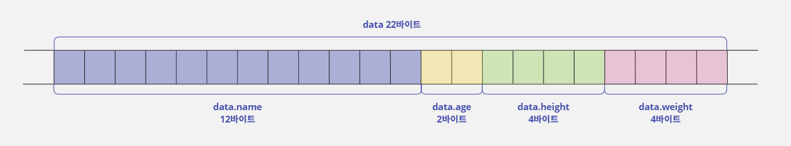
- 다음 예제는 구조체 문법을 사용하여 이름, 나이, 키, 몸무게를 저장할 수 있는
People(Person)자료형을 정의한다.
#include <stdio.h>
typedef struct People {
char name[12];
unsigned short int age;
float height;
float weight;
} Person;
void main() {
Person data; // person 자료형으로 data 변수를 선언함
printf("대상자의 정보를 입력하세요\n");
printf("이름 :");
scanf("%s", data.name); // 이름을 입력 받아 data 변수의 name 요소에 저장합니다
printf("나이 :");
scanf("%hu", &data.age); // 나이를 입력 받아 data 변수의 age 요소에 저장합니다
printf("키 :");
scanf("%f", &data.height); // 키를 입력 받아 data 변수의 height 요소에 저장합니다
printf("몸무게 :");
scanf("%f", &data.weight); // 몸무게를 입력 받아 data 변수의 weight 요소에 저장합니다
printf("\n입력한 정보는 다음과 같습니다.\n");
// 키와 몸무게는 소수점 첫째 자리까지만 보여주기 위해 %.1f 형식으로 출력함
printf("%s : %d세, %.1fcm, %.1fkg\n", data.name, data.age, data.height, data.weight);
}
대상자의 정보를 입력하세요
이름 :Son
나이 :30
키 :185
몸무게 :77
입력한 정보는 다음과 같습니다.
Son : 30세, 185.0cm, 77.0kg
- 다음과 같이 구조체 자료형인
Person으로 배열 변수를 선언한 경우에도 각 요소에 접근하는 방식은 같다. - 먼저 자신이 변경하려는 배열 요소의 색인을
[]안에 적는다. - 그리고 선택한 배열 요소가
Person자료형이기 때문에.(요소 지정)연산자를 사용해 구조체에 포함된 요소를 사용하면 된다.
Person friends[3]; // Person 데이터 3개를 저장할 수 있는 메모리를 할당함
friends[1].age = 22; // 두 번째 요소의 age에 값 22를 대입함
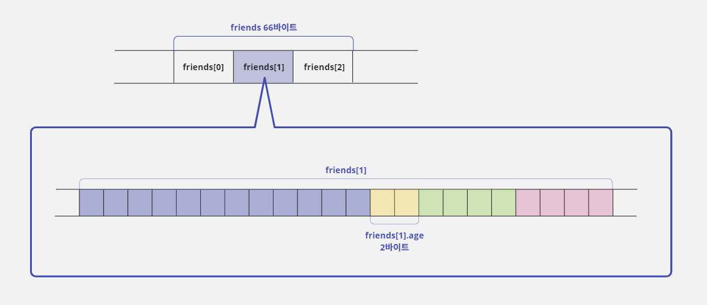
구조체로 선언한 변수를 포인터로 사용하기
- 다음과 같이
Person형으로 선언한 변수의 주소를Person *형 선언한 포인터 변수에 저장해서 사용할 수도 있다.
Person data; // Person 자료형으로 data 변수를 선언함
Person *p; // Person 형식으로 선언한 메모리에 접근할 수 있는 포인터를 선언함
p = &data; // 포인터 변수 p는 data 변수의 주소 값을 저장함
(*p).age = 23; // p에 저장된 주소에 가서 age 요소에 값 23을 대입함
- 구조체 내부 요소에 접근하려면
*(주소 지정)연산자를 사용해서data변수의 주소로 이동한 다음.(요소 지정)연산자를 사용해야 한다. - 그런데
*연산자가.연산자보다 연산자 우선순위가 낮아서*p.age = 23;처럼 사용하면 오류가 발생한다. - 따라서
*연산자가 먼저 수행되도록 괄호()를 사용해서(*p).age = 23;형태로 명령문을 구성해야 한다.
연산자 우선순위 문제를 해결하는 -> 연산자
- 하지만 구조체로 선언한 변수를 포인터 문법으로 사용할 때마다
(*p)형태를 사용한다면 불편할 것이다. - 구조체 문법은 이러한 연산자 우선순위 문제를 해결할 수 있는
->연산자를 추가로 제공한다. - 다음과 같이
->연산자를 사용하면*연산자와.연산자를 각각 사용하지 않고 하나의 연산자로 사용하기 때문에 연산자 우선순위 문제가 자연스럽게 해결된다.
Person data;
Person *p;
p = &data;
p->age = 23; // (*p).age = 23; 과 같다
- 프로그래머들이
->연산자를 사용할 때는 대개 양옆 공백을 띄우지 않는다. - 즉,
p -> age보다p->age형태로 사용하는 것이 좋다.
구조체 문법으로 선언한 변수의 초기화 방법
- 배열로 선언한 변수는 데이터가 그룹으로 묶인 형태이기 때문에 초기값을 대입할 때 다음처럼 중괄호
{}를 사용했다.
int data[3] = {1, 2, 3}; // 배열의 각 요소에 순서대로 1, 2, 3 값이 대입됨
- 배열과 마찬가지로 구조체 문법도 데이터를 묶는 형태이기 때문에 같은 형식으로 초기값을 대입하면 된다.
- 예를 들어 다음과 같이
People구조체를 선언했을 때 이 구조체 변수를 초기화하려면 중괄호{}를 사용하여 초기값을 적어주면 된다.
struct People {
char name[12];
unsigned short int age;
float height;
float weight;
};
void main() {
// 구조체로 선언한 변수를 초기화함
struct People data = {"홍길동", 51, 185.6, 86.2};
}
- 여기에서는
main함수에서People구조체로data변수를 선언하면서name에"홍길동",age에51,height에185.6,weight에86.2로 각 요소를 초기화했다. - 구조체 변수를 초기화할 때 주의할 점은 구조체 내부에 선언한 변수(구조체 요소)의 순서와 초기값의 순서가 같아야 한다는 것이다.
18-3. 배열과 구조체
- 구조체를 사용하는 것이 왜 좋은지 이해하려면 같은 프로그램을 배열과 구조체로 각각 만들어 비교해 보는 것이 가장 좋은 방법이다.
- 이렇게 하면 데이터를 어떻게 그룹으로 묶는 것이 더 좋은지 판단할 수 있는 기준이 생길 것이다.
친구 정보 관리 프로그램의 기능
- 두 문법을 비교하기 위해서 친구의 이름, 나이, 키, 체중을 관리하는 프로그램을 만들어 보자.
- 이 프로그램은 다음처럼 각 기능을 담당할 함수를 만들어서 사용하자.
- 작업 메뉴:
main함수에서 처리 >
- 사용자가 프로그램에서 제공하는 기능을 선택할 수 있도록 메뉴를 출력해 주는 작업을 한다.
- 프로그램 종료 기능은 반복문을 빠져나오는 행위로 끝나기 때문에 개별 기능으로 처리하지 않는다.
- 친구 추가하기:
AddFriend함수에서 처리 >
scanf표준 입력 함수를 사용하여 한 번에 1명씩 최대 5명까지 입력 받는다.
- 5명을 다 받으면 더 이상 입력 받을 수 없다고 오류로 처리한다.
- 친구 목록 보기:
ShowFriendList함수에서 처리 >
- 현재 입력된 친구 목록을 보여 준다.
- 만약 등록된 친구가 없다면 오류 메시지를 출력한다.
배열로 친구 정보 관리 프로그램 만들기
#include <stdio.h>
#define MAX_COUNT 5 // 친구 등록 가능한 최대 수
typedef char NAME_TYPE[14];
/// MAX_COUNT 만큼의 친구 이름을 저장하기 위한 name배열은 char name[MAX_COUNT][14]; 처럼 2차원 배열로 선언해서 사용한다.
/// name 배열을 다른 함수에서 포인터로 받으려면 char (*p_name)[14]; 처럼 사용해야 하는데 형태가 복잡하기 때문에
/// 이름을 위한 자료형 NAME_TYPE을 재정의한다.
int AddFriend(NAME_TYPE *p_name, unsigned short int *p_age, float *p_height, float *p_weight, int count) {
/// AddFriend는 친구를 추가하는 함수로 성공하면 1을 반환하고 실패하면 0을 반환한다.
/// main함수에서 선언한 name, age, height, weight 배열의 시작 주소를 포인터로 받아서 사용하며
/// count는 현재까지 입력된 친구의 수를 기업하는 변수이다.
if (count < MAX_COUNT) { // 입력 가능한 최대 수를 넘었는지 체크함
printf("\n새로운 친구 정보를 입력하세요\n");
printf("1. 이름 :");
scanf("%s", *(p_name + count)); // name 배열의 count 위치에 이름을 입력함
printf("2. 나이 :");
scanf("%hu", p_age + count); // age 배열의 count 위치에 나이를 입력함
printf("3. 키 :");
scanf("%f", p_height + count); // height 배열의 count 위치에 키를 입력함
printf("4. 몸무게 :");
scanf("%f", p_weight + count); // weight 배열의 count 위치에 몸무게를 입력함
printf("입력을 완료했습니다.\n\n");
return 1; // 친구 추가 성공하면 1을 반환함
} else {
// 입력 가능한 최대 수를 넘었을 때 오류를 출력함
printf("최대 인원을 초과하여 입력을 할 수 없습니다.\n");
printf("최대 %d명까지만 관리 가능합니다.\n\n", MAX_COUNT);
}
return 0; // 친구 추가 실패
}
void ShowFriendList(NAME_TYPE *p_name, unsigned short int *p_age, float *p_height, float *p_weight, int count) {
/// ShowFriendList는 등록된 친구를 출력하는 함수로
/// main함수에서 선언한 name, age, height, weight 배열의 시작 주소를 포인터로 받아서 사용한다.
/// count는 현재까지 입력된 친구 수를 기억하는 변수이다.
int i;
if (count > 0) { // 등록된 친구가 있으면 그 수만큼 반복하면서 친구 정보를 출력함
printf("\n등록한 친구 목록\n");
printf("===================================\n");
for (i = 0; i < count; i++) {
printf("%-14s, %3d, %6.2f, %6.2f\n", *(p_name + i), *(p_age + i), *(p_height + i), *(p_weight + i));
}
printf("===================================\n\n");
} else { // 등록한 친구가 없으면 오류를 출력함
printf("\n등록된 친구가 없습니다.\n\n");
}
}
void main() {
NAME_TYPE name[MAX_COUNT]; // 친구 이름을 저장할 배열
unsigned short int age[MAX_COUNT]; // 친구 나이를 저장할 배열
float height[MAX_COUNT]; // 친구 키를 저장할 배열
float weight[MAX_COUNT]; // 친구 몸무게를 저장할 배열
int count = 0, num; // count는 등록된 친구 수
while (1) { // 무한 루프: 사용자가 3을 누르면 break문으로 종료시킴
// 메뉴를 화면에 출력함
printf(" [ 메뉴 ] \n");
printf("=================\n");
printf("1. 친구 추가 \n");
printf("2. 친구 목록 보기 \n");
printf("3. 종료 \n");
printf("=================\n");
printf("번호 선택 :");
scanf("%d", &num); // 사용자에게 번호를 입력 받음
if (num == 1) { // 1번: 친구 추가를 선택한 경우
if (1 == AddFriend(name, age, height, weight, count)) count++;
/// AddFriend 함수가 1을 반환하면 정상적으로 친구 정보가 추가된 것이다.
/// 따라서 1을 반환했을 때만 등록된 친구 수를 증가시킨다.
/// 이름, 나이, 키, 몸무게 배열의 주소를 넘겨준다.
} else if (num == 2) { // 2번: 친구 목록 보기를 선택한 경우
ShowFriendList(name, age, height, weight, count);
/// ShowFriendList 함수에 이름, 나이, 키, 몸무게 배열의 주소를 인수로 넘겨준다.
} else if (num == 3) { // 3번: 반복문을 빠져나가 종료함
break;
} else {
// 번호가 유효하지 않은 경우에 오류 메시지를 출력함
printf("1~3 번호만 선택할 수 있습니다!!\n\n");
}
}
}
사용자 이름을 재정의한 NAME_TYPE에 대해 좀 더 알아보자
- 이 프로그램에서 사용자 이름은 영문 기준 최대 13자까지 저장할 수 있게 만들었다.
- 그런데 문자열 끝에
NULL문자 0까지 저장해야 하므로 배열의 크기는 14가 된다.- 이름은 문자열 형태이기 때문에 이미 1차원 배열 형식이다.
- 그래서 다섯 명의 이름 데이터(
MAX_COUNT)를 저장하려면 다음과 같이 2차원 배열로 선언해서 사용해야 한다.char name[MAX_COUNT][14];
- 그리고
name배열을 다른 함수에서 포인터로 받으려면 다음과 같은 형식의 포인터를 사용해야 한다.char (*p_name)[14];
typedef를 사용하여 이름을 위한 자료형(NAME_TYPE)을 만들고 표현을 단순화 시켜보자.char name[MAX_COUNT][14]; -> NAME_TYPE name[MAX_COUNT]; char (*p_name)[14]; -> NAME_TYPE *p_name;
구조체로 친구 정보 관리 프로그램 만들기
#include <stdio.h>
#define MAX_COUNT 5 // 친구 등록 가능한 최대 수
typedef struct People {
char name[14]; // 이름
unsigned short int age; // 나이
float height; // 키
float weight; // 몸무게
} Person;
int AddFriend(Person *p_friend, int count) {
/// AddFriend는 친구를 추가하는 함수로 성공하면 1을 반환하고 실패하면 0을 반환한다.
/// main 함수에서 friends 배열의 시작 주소를 포인터로 받아서 사용한다.
/// count는 현재까지 입력된 친구의 수를 기억하는 변수이다.
if (count < MAX_COUNT) { // 입력 가능한 최대 수를 넘었는지를 확인함
p_friend = p_friend + count; // friends 배열의 count 위치로 이동함
printf("\n새로운 친구 정보를 입력하세요\n");
printf("1. 이름 :");
scanf("%s", p_friend->name); // 구조체의 name 요소에 입력함
printf("2. 나이 :");
scanf("%hu", &p_friend->age); // 구조체의 age 요소에 입력함
printf("3. 키 :");
scanf("%f", &p_friend->height); // 구조체의 height 요소에 입력함
printf("4. 몸무게 :");
scanf("%f", &p_friend->weight); // 구조체의 weight 요소에 입력함
printf("입력을 완료했습니다.\n\n");
return 1;
} else {
// 입력 가능한 최대 수를 넘었을 때 오류 상태를 출력함
printf("최대 인원을 초과하여 입력을 할 수 없습니다.\n");
printf("최대 %d명까지만 관리 가능합니다.\n\n", MAX_COUNT);
}
return 0; // 친구 추가 실패
}
void ShowFriendList(Person *p_friend, int count) {
/// ShowFriendList는 등록된 친구를 출력하는 함수로 main 함수에서 friends 배열의 시작 주소를 포인터로 받아서 사용한다.
/// count는 현재까지 입력된 친구의 수를 기억하는 변수이다.
int i;
if (count > 0) { // 등록된 친구가 있으면 그 수만큼 반복하면서 친구 정보를 출력함
printf("\n등록된 친구 목록\n");
printf("=======================================\n");
for (i = 0; i < count; i++) {
printf("%-14s, %3d, %6.2f, %6.2f\n", p_friend->name, p_friend->age, p_friend->height, p_friend->weight);
p_friend++; // 다음 위치에 있는 친구 정보로 주소를 이동함
}
printf("=======================================\n\n");
} else { // 등록된 친구가 없으면 오류를 출력함
printf("\n등록된 친구가 없습니다.\n\n");
}
}
void main() {
Person friends[MAX_COUNT]; // 친구 정보를 저장할 배열
int count = 0, num; // count: 등록된 친구 수
while (1) { // 무한 루프: 사용자가 3을 누르면 break문으로 종료시킴
// 메뉴를 화면에 출력함
printf(" [ 메뉴 ] \n");
printf("=================\n");
printf("1. 친구 추가 \n");
printf("2. 친구 목록 보기 \n");
printf("3. 종료 \n");
printf("=================\n");
printf("번호 선택 :");
scanf("%d", &num); // 사용자에게 번호를 입력 받음
if (num == 1) { // 1번: 친구 추가를 선택한 경우
if (1 == AddFriend(friends, count)) count++;
/// AddFriend 함수가 1을 반환하면 정상적으로 친구 정보가 추가된 것이다.
/// 따라서 1을 반환했을 때만 등록된 친구 수를 증가시킨다.
/// friends 배열이 주소를 넘겨준다.
} else if (num == 2) { // 2번: 친구 목록 보기를 선택한 경우
// friends 배열의 주소를 인수로 넘겨줌
ShowFriendList(friends, count);
} else if (num == 3) { // 3번: 반복문을 빠져나가 종료함
break;
} else {
// 번호가 유효하지 않은 경우에 오류를 출력함
printf("1~3 번호만 선택할 수 있습니다!!\n\n");
}
}
}
- 두 소스 코드를 비교해 보면 가장 큰 차이점은 친구 정보를
Person자료형으로 묶은 것이다. Person자료형을 사용하기 때문에 처리해야 할 데이터가 모두 하나로 통합되며, 함수에 전달하는 매개변수의 개수가 2개로 줄어들고 포인터 표현도 단순해졌다.- 결국 배열로 데이터를 묶는 것보다 구조체를 사용해서 묶는 것이 관리하기도 편하고 좀 더 간단하게 표현할 수 있다.
18-4. 구조체로 만든 자료형의 크기
구조체 멤버 정렬 기준
- 과거에는 컴퓨터 시스템의 메모리 용량이 적어서 프로그래머들은 메모리를 최대한 적게 사용하도록 프로그램을 개발해야 했다.
- 최근에는 컴퓨터 시스템의 메모리 용량이 점차 늘어나면서 메모리를 조금 더 사용하더라도 프로그램의 실행 속도가 향상되도록 프로그램을 개발하고 있다.
- 그런데 구조체의 경우에는 다양한 크기의 메모리를 하나의 그룹으로 묶어 사용하다 보니 구조체 요소를 사용할 때 실행 속도가 떨어지는 문제가 있다.
- 그래서 구조체의 요소를 일정한 크기로 정렬하여 실행 속도를 더 빠르게 하는 개념이 C 언어 컴파일러에 추가되었다.
- 컴파일러마다 용어의 차이는 있지만 마이크로소프트에서 제공하는 C 컴파일러의 경우에는 '구조체 멤버 정렬'(Struct Member Alignment) 기능을 제공하며 1, 2, 4, 8바이트로 정렬 기준을 설정할 수 있다.
- 18-2에서 구조체로 만든 자료형의 크기는 구조체를 구성하는 요소들의 크기를 합산한 것과 같다고 설명했다.
- 하지만 실제로는 컴파일러에서 구조체 정렬 기준을 어떻게 설정하는 지에 따라 구조체로 만든 자료형의 크기가 달라질 수 있다.
- 그래서 이 기능을 모르고 단순히 구조체를 구성하는 요소의 크기를 합산해서 구조체 크기로 사용하다가 버그가 발생하는 경우도 있다.
- 구조체 멤버 정렬 기준에 따라 구조체로 선언한 자료형의 크기가 어떻게 달라지는지 설명하기 위해 아래와 같이
Test구조체를 선언하고,Test자료형의 크기가 어떻게 달라지는지 알아보자.
struct Test {
char a; // 1바이트
int b; // 4바이트
short c; // 2바이트
char d; // 1바이트
};
1바이트 정렬
- 이 정렬을 사용하면 구조체의 본래 의미대로 메모리가 구성된다.
- 따라서 이 기준으로 정렬된
Test자료형의 크기는 8바이트이다.
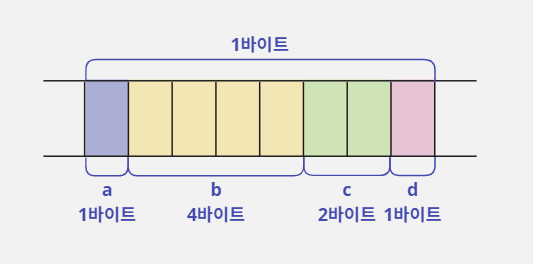
2바이트 정렬
- 각 요소는 2의 배수에 해당하는 주소에서 시작할 수 있고 전체 크기가 2의 배수가 되어야 한다.
- 따라서 요소가 놓일 주소가 2의 배수가 아니라면 해당 1바이트를 버리고 2의 배수가 되는 주소에 놓인다.
- 하지만 예외적으로 요소의 자료형이 2바이트보다 작은 경우에는 해당 요소의 크기로 정렬된다.
- 예를 들어 2, 4, 8바이트 자료형의 요소들은 2의 배수에 해당하는 주소에 배치되지만 2바이트보다 작은 1바이트 자료형 요소들은 그대로 1바이트로 정렬된다.
- 위와 같은 기준을 적용하면 전체 크기는 9바이트가 되어야 하지만, 2바이트 정렬은 전체 크기가 2의 배수가 되어야 하기 때문에 10바이트가 된다.
- 그리고 마지막 1바이트를 사용하지 않는다.
- 결론적으로 2바이트 정렬 기준으로 정렬한
Test구조체의 크기는 10바이트이다.
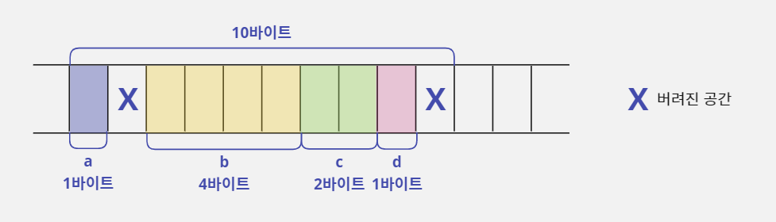
4바이트 정렬
- 각 요소는 4의 배수에 해당하는 주소에서 시작할 수 있고 전체 크기가 4의 배수가 되어야 한다.
- 따라서 요소가 놓일 주소가 4의 배수가 아니라면 해당 1~3바이트를 버리고 4의 배수가 되는 주소에 놓인다.
- 하지만 요소의 자료형이 4바이트보다 작은 경우에는 해당 요소의 크기로 정렬된다.
- 예를 들어 4바이트와 8바이트 자료형의 요소들은 4의 배수에 해당하는 주소에 배치되지만 4바이트보다 작은 1바이트 자료형은 1바이트 정렬이 적용되고 2바이트 자료형은 2바이트 정렬이 적용된다.
- 위와 같은 기준을 적용하면 전체 크기는 11바이트가 되어야 하지만, 4바이트 정렬은 전체 크기가 4의 배수가 되어야 하기 때문에 12바이트가 된다.
- 그리고 마지막 1바이트를 사용하지 않는다.
- 결론적으로 4바이트 정렬 기준으로 정렬한
Test구조체의 크기는 12바이트이다.
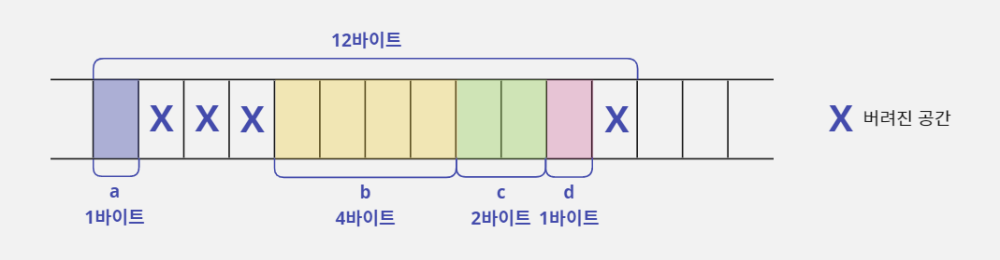
8바이트 정렬
- 구조체를 정렬할 때 모든 요소가 기준 정렬 바이트 보다 작으면 요소 중에서 가장 큰 요소의 크기로 정렬된다.
- 따라서 지금 예시로 사용하는 구조체는 가장 큰 요소의 크기가 4바이트이기 때문에 8바이트 정렬을 사용해도 4바이트로 정렬되어 버린다.
- 따라서 다음과 같이
Test구조체에서 8바이트 요소를 사용하도록 수정해보자.
struct Test {
char a; // 1바이트
double b; // 8바이트
short c; // 2바이트
char d; // 1바이트
};
- 각 요소는 8의 배수에 해당하는 주소에서 시작할 수 있고 전체 크기가 8의 배수가 되어야 한다.
- 따라서 요소가 놓일 주소가 8의 배수가 아니라면 해당 1~7바이트를 버리고 8의 배수가 되는 주소에 놓인다.
- 하지만 요소의 자료형이 8바이트보다 작은 경우에는 해당 요소의 크기로 정렬된다.
- 예를 들어 8바이트 자료형 요소들은 8의 배수에 해당하는 주소에 배치되지만 8바이트보다 작은 1, 2, 4바이트 자료형은 각각 1, 2, 4바이트 정렬이 적용된다.
- 위와 같은 기준을 적용하면 전체 크기는 19바이트가 되어야 하지만, 8바이트 정렬은 전체 크기가 8의 배수가 되어야 하기 때문에 크기는 24바이트가 된다.
- 그리고 마지막 5바이트를 사용하지 않는다.
- 결론적으로 8바이트 정렬 기준으로 정렬된
Test구조체의 크기는 24바이트이다.
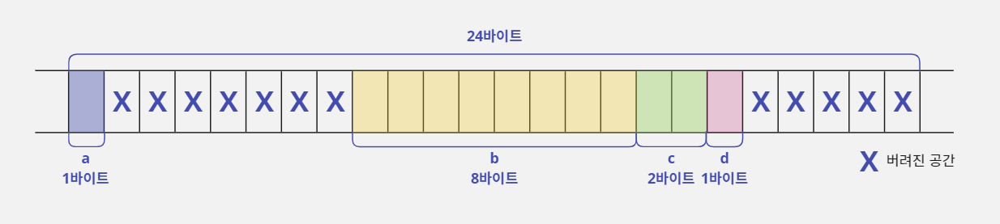
- 마지막에 설명한 8바이트 정렬의 예시를 보면 알 수 있듯이 이 구조체는 24바이트 중에 무려 12바이트나 버려진다.
- 그런데 놀랍게도 요즘 컴파일러들은 8바이트 정렬을 기본 값으로 하고 있다.
- 따라서 구조체에 8바이트 크기의 자료형을 사용하지 않았다면 낭비가 적겠지만,
double이나__int64같은 8바이트 크기의 자료형을 사용하는 순간 구조체 크기가 갑자기 커지게 될 것이다.
구조체의 요소는 같은 크기끼리 모아 주는 것이 좋다
- 이 문제는 구조체로 자료형을 선언할 때 같은 크기의 요소들끼리 모아 주는 것만으로도 프로그램의 효율을 크게 높일 수 있다.
/* 기존 구조체 - A */
struct Test {
char a; // 1바이트
double b; // 8바이트
short c; // 2바이트
char d; // 1바이트
};
/* 개선된 구조체 - B */
struct Test {
char a; // 1바이트
char d; // 1바이트
short c; // 2바이트
double b; // 8바이트
};
- 다음은 개선된 구조체(B)의 메모리 배치도이다.
- 그림을 보면 구조체의 크기가 16바이트이다.
- 단순히 구조체 요소의 순서만 변경했을 뿐인데 낭비되던 메모리가 12바이트에서 4바이트로 줄어들었다.
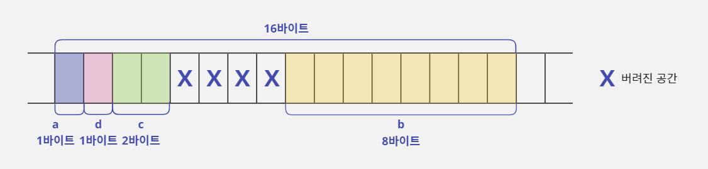
- 이처럼 작은 부분이라도 정확하게 개념을 이해해서 소스 코드를 구성하면 특별한 최적화 작업을 해주지 않아도 프로그램의 메모리 사용 효율을 높일 수 있다.
- 그리고 앞에서 설명한 것처럼 컴파일러 설정에 따라서 구조체로 선언한 자료형의 크기가 바뀔 수 있다.
- 따라서 동적 메모리 할당을 할 때 구조체의 크기를 직접 계산해서 사용하는 것보다 자료형의 크기를 계산해 주는
sizeof연산자를 사용하는 것이 안전하다.
struct Test *p1 = (struct Test *) malloc(16); // 설정에 따라 오류가 발생할 수 있음
struct Test *p2 = (struct Test *) malloc(sizeof(struct Test)); // 권장하는 형태
18-5. 구조체를 활용한 연결 리스트
사용자에게 묻지 않고 프로그램이 알아서 동적 메모리 할당하기
- 동적 할당을 사용하면 데이터를 저장할 크기를 프로그램이 실행되는 중에 입력 받아 변경할 수 있다.
- 따라서 컴파일 시점에 메모리 크기를 결정하기 때문에 실행 중에 메모리 크기를 변경할 수 없는 정적 할당보다 장점이 많다고 설명했다.
- 하지만 동적 할당도 사용자에게 크기나 개수를 입력 받아 사용해야 하는 것은 마찬가지이다.
- 예를 들어 여러 개의 숫자를 입력받아서 합산하는 '더하기 프로그램'을 만든다고 가정해보자.
- 이 프로그램은 시작하면서 사용자에게 숫자를 몇 개 사용할 것인지 입력 받고, 그 개수만큼 동적으로 메모리를 할당한다.
- 그러면 사용자 입장에서는 입력한 개수만큼만 더하기 작업을 할 수 있기 때문에 불편할 것이다.
- 사용자에게 가장 편한 방법은 몇 개의 숫자를 사용할 것인지 일일이 묻지 않고 사용자가 입력하는 대로 알아서 다 저장하고 합산해 주는 것이다.
- 그렇다고 사용자가 전부 사용할 수도 없을 만큼 엄청나게 큰 메모리를 할당 받아 놓고 메모리 제한이 없는 것처럼 만드는 것은 좋지 않다.
- 사실 이 문제를 해결하는 방법은 많지만 구조체를 배웠으니 구조체를 활용해서 해결해 보자.
- 기존 방식에서 사용자에게 입력 받을 숫자의 개수를 묻는 이유는 할당된 주소를 저장할 포인터 변수를 1개만 사용하기 때문이다.
- 즉 한 번의 메모리 동적 할당으로 저장할 공간을 만들기 때문이다.
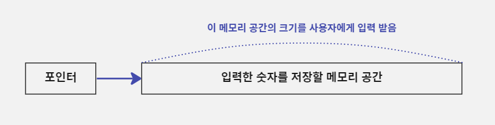
- 따라서 사용자에게 몇 개의 숫자를 사용할 것인지 묻지 않으려면 메모리를 한 번에 할당하지 않고 사용자가 숫자를 입력할 때마다 그 숫자를 저장하는 동적 메모리를 하나씩 늘려가는 방법을 사용하면 된다.
- 그런데 이 방법을 사용하려면 동적으로 할당된 메모리의 개수만큼 포인터가 있어야 한다.
- 다음과 같은 형태가 될 것이다.
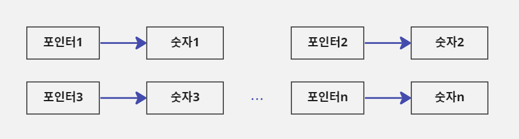
- 위 그림대로라면 동적으로 할당된 메모리의 주소 값을 저장하기 위해 그 개수만큼 포인터가 있어야 한다는 뜻이다.
- 그래서 사용자가 숫자를 입력할 때마다 숫자 1개와 포인터 1개가 늘어나도록 만들어야 한다.
- 포인터가 늘어나면 '포인터1'과 '포인터2' 사이에도 서로 연결 고리가 있어야 연결이 유지될 것이다.
- 아래 그림을 보면 '포인터1'은 사용자가 입력한 숫자를 저장한 메모리인 '숫자1'을 가리켜야 하기 때문에 '포인터2'를 가리킬 수가 없다.
- 포인터는 1개의 대상만 가리킬 수 있기 때문이다.
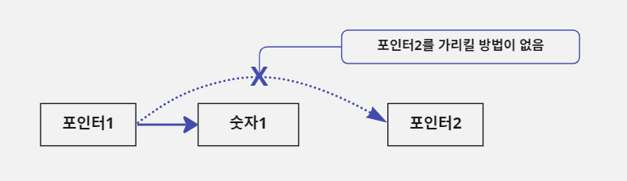
- 이 문제는 '숫자1'과 '포인터2'를 각각 별개의 메모리로 할당하지 않고 하나의 메모리로 묶어서 동적으로 할당하면 해결할 수 있다.
- 다음과 같이 '숫자1'과 '포인터2'를 하나의 동적 메모리에 할당하고 그 주소 값을 '포인터1'에 저장하면 '포인터1'은 '숫자1'과 '포인터2'를 모두 가리키게 되는 것이다.
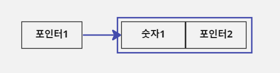
- 위의 상황에서 '포인터2'는 아직 가리키는 대상이 없지만 새로운 숫자가 입력되면 그 숫자가 저장된 메모리의 주소를 가리킬 용도로 미리 만들어 놓은 것이다.
- 따라서 '숫자2'가 추가로 입력되면 다음 그림처럼 '숫자2'와 또 그다음 숫자를 가리킬 '포인터3'이 함께 사용하는 동적 메모리를 할당해서 그 시작 주소를 '포인터2'에 저장한다.
- 이렇게 되면 '포인터2'를 사용해서 '숫자2'와 '포인터3'을 한 번에 사용할 수 있다.
- 결국 이런 방법을 사용하면 사용자가 숫자를 입력할 때마다 숫자와 포인터를 한 쌍으로 동적 할당하면서 계속 저장할 수 있다.
- 그리고 위의 그림을 보면 동적으로 할당된 메모리가 포인터로 연결되어 있다.
- 자료 구조에서는 이런 형식으로 자료를 관리하는 방법을 연결 리스트(Linked-list)라고 한다.
연결 리스트는 자주 쓰이는 자료 구조이다
- 프로그램을 만들 때 데이터의 개수를 예상할 수 없어서 저장할 공간을 크게 확보했는데 데이터가 1~2개만 저장된다면 낭비가 심할 것이다.
- 그렇다고 메모리를 적게 확보하면 저장할 공간이 부족해서 소스 코드를 수정해야 하는 문제가 생길 것이다.
- 이런 문제를 해결할 수 있는 자료 구조가 바로 연결 리스트이며, 데이터를 저장할 때 데이터의 개수를 예상할 수 없고 그 범위가 너무 넓을 때 사용한다.
- C 언어에서 이 자료 구조를 표현하기 위한 가장 적합한 문법이 바로 구조체이다.
- 구조체를 활용하는 방법을 익히고, 자주 쓰이는 자료 구조인 연결 리스트 사용 방법도 익혀 보자.
연결 리스트의 노드를 구조체로 선언하기
- 연결 리스트를 C 언어에서 어떻게 구현할 수 있는지 단계별로 알아보자.
- 연결 리스트에서 숫자와 포인터를 함께 저장하기 위해 할당한 메모리를 노드(Node)라고 부른다.
- 다음 그림에서 파란색 선으로 둘러싸인 메모리가 노드이다.
- 연결 리스트는 이 노드를 연결해서 데이터를 관리하기 때문에 노드에 해당하는 메모리를 어떻게 구성할지 먼저 결정해야 한다.
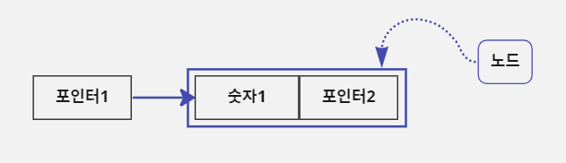
typedef struct node { // 이 구조체를 연결 리스트에서 노드(Node)라고 함
int number; // 숫자를 저장할 변수
struct node *p_next; // 다음 노드를 가리킬 포인터
} NODE;
연결 리스트에 노드를 추가하며 이어가기
1단계: 연결 리스트의 시작 상태
- 연결 리스트는 이전 노드와 이후에 새로 추가되는 노드를 포인터로 연결하면서 확장하는 방식이다.
- 하지만 모든 것을 노드만으로 해결할 수는 없다.
- 왜냐하면 동적으로 할당되는 첫 노드의 주소 값을 저장할 포인터가 필요하기 때문이다.
- 그래서 연결 리스트의 시작점이 되는 포인터가 필요한데 이 포인터를 헤드 포인터(Head Pointer)라고 한다.
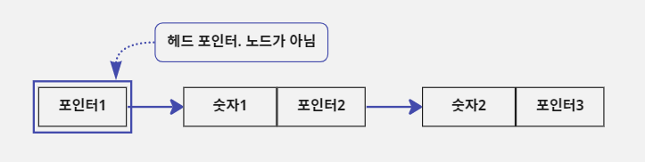
- 헤드 포인터는
NODE구조체인 첫 노드를 가리킬 것이기 때문에 다음과 같이NODE *형식으로 선언해야 한다. - 그리고 가리키는 노드가 없음을 명시하기 위해서
NULL을 초기값으로 대입한다. NULL은 '해당하는 메모리 주소가 없음'이라는 의미로 사용한다.
Node *p_head = NULL; // 첫 노드를 가리킬 헤드 포인터를 선언하고 NULL을 초기값으로 대입함.
// 첫 노드가 없음을 명시함
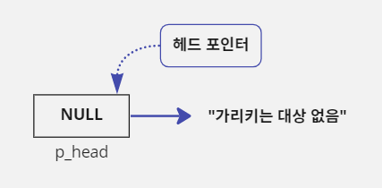
2단계: 숫자 12를 저장하기 위한 새 노드 추가
- 사용자가 12라는 숫자를 입력했다고 가정해보자.
- 이 값을 연결 리스트에 저장하기 위해 새로운 노드를 추가해야 한다.
- 따라서 새로운 노드를 위한 메모리를
malloc함수를 사용해 동적으로 할당한다. - 그리고 할당된 새 노드의 주소 값은
p_head포인터에 저장하여 헤드 포인터가 첫 노드를 가리킬 수 있도록 설정한다. - 마지막으로 새로 할당된 노드의
number(p_head->number)에 입력된 숫자 12를 저장하고p_next(p_head->p_next)포인터에는 그 다음 노드가 없다는 뜻으로NULL을 대입한다.
p_head = (NODE *)malloc(sizeof(NODE)); // 새 노드를 위한 메모리를 할당하고 주소 값을 헤드 포인터에 저장함
p_head->number = 12; // 노드의 number에 값 12를 저장함
p_head->p_next = NULL; // 다음 노드가 없음을 명시함
- 이렇게 되면 다음 그림처럼 연결 리스트가 구성될 것이다.
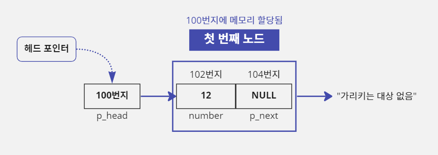
- 새로운 노드가 힙 메모리의 100번지에 할당되었다고 가정하면
p_head는 새 노드를 가리켜야 하기 때문에 100번지가 저장될 것이다. - 그리고 노드 메모리의 시작 위치에
number가 있기 때문에 첫 노드에 포함된number의 주소 값은 100이고number요소의 크기가 4바이트이기 때문에p_next의 주소 값은 104가 된다.
3단계: 숫자 15를 저장하기 위한 새 노드 추가
- 사용자가 15라는 숫자를 추가로 입력했다고 가정해보자.
- 그러면 이 값을 연결 리스트에 저장하기 위해서는 새로운 노드를 한 번 더 추가해야 한다.
- 하지만 2단계와 달리 새로 추가되는 노드는 두 번째 노드이기 때문에 할당된 주소를
p_head포인터에 저장하면 안 되고 첫 노드의p_next포인터에 저장해야 한다. - 첫 노드의 주소 값은
p_head포인터에 저장되어 있기 때문에 첫 노드의p_next를 사용하려면p_head->p_next라고 사용하면 된다. - 그리고 새로 할당된 노드의
number(p_head->p_next->number)에 입력된 숫자 15를 저장하고p_next포인터(p_head->p_next->p_next)에는 그 다음 노드가 없다는 뜻으로NULL을 대입한다.
p_head->p_next = (NODE *) malloc(sizeof(NODE)); // 노드를 위한 메모리를 할당함
p_head->p_next->number = 15; // 노드의 number에 15를 저장함
p_head->p_next->p_next = NULL; // 다음 노드가 없음을 명시함
- 이렇게 되면 다음 그림처럼 연결 리스트가 구성될 것이다.
- 새로운 노드가 힙 메모리의 108번지에 할당되었다고 가정하면 첫 번째 노드의
p_next에는 주소 값 108이 저장될 것이다. - 그리고 노드의 시작 위치에
number가 있기 때문에 두 번째 노드에 포함된number의 주소 값은 108이고number요소의 크기가 4바이트이기 때문에p_next의 주소 값은 112가 된다.
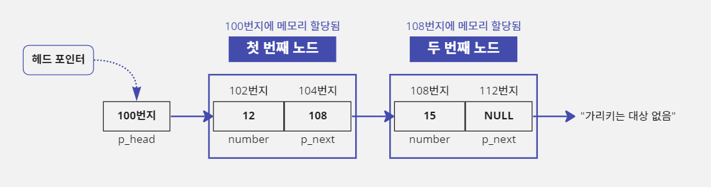
반복문으로 연결 리스트에서 마지막 노드 탐색하기
- 연결 리스트에 노드를 새로 추가하면 기존에 구성된 노드 목록에서 가장 뒤쪽에 추가될 것이다.
- 그래서 첫 노드의 주소 값은
p_head에 저장했지만 그 다음 노드의 주소 값은p_head->p_next에 저장하고 그 다음 노드의 주소 값은p_head->p_next->p_next에 저장될 것이다. - 이렇게 노드를 5개 추가하고 여섯 번째 노드를 추가하려면 여섯 번째 노드의 주소 값은 다섯 번째 노드의
p_next에 저장해야 한다.
p_head->p_next->p_next->p_next->p_next->p_next = (Node *) malloc(sizeof(NODE));
- 문제가 있어 보인다... 노드가 100개이면 다 적을 것인가?
- 문제를 해결해 보자.
- 위 예시를 보면
p_next->작업이 일정하게 반복된다. - 반복문을 사용해서 해결할 수 있을 것 같다.
- 이 반복문의 시작 값은 헤드 포인터
p_head변수에 저장된 주소 값이고,p_next에 저장된 값이NULL이 되면 반복문을 끝내면 된다. - 왜냐하면 마지막 노드의
p_next에NULL이 저장되어 있고 새로운 노드가 추가된다면NULL이 들어 있던p_next에 주소 값이 저장될 것이기 때문이다.
// 반복은 p_head에 저장된 주소 값에서 시작함. p_head는 첫 노드의 주소 값을 저장함
NODE *p = p_head;
// p_next가 NULL일 때까지 반복함. p_next값이 NULL이면 마지막 노드라는 뜻임
while(Null != p->p_next) {
p = p->p_next; // p->p_next 값을 p에 대입하면 p는 다음 노드의 주소로 이동함
}
- 위의 예시에서 포인터 변수
p에 저장된 주소 값은while문이 한 번 반복할 때마다p가 가리키는 노드의 다음 노드의 주소로 이동한다. - 따라서 위의 코드처럼 작업하면
while반복문을 끝냈을 때 포인터 변수p에 연결 리스트 마지막 노드의 주소 값이 저장되어 있을 것이다.
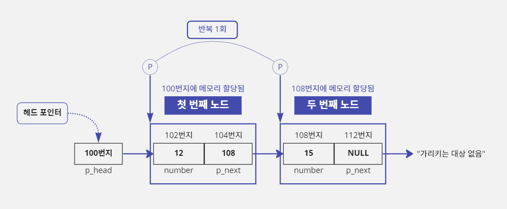
조건을 체크하여 연결 리스트에 새로운 노드 추가하기
- 연결 리스트에 노드가 하나도 없는 경우(
p_head가NULL인 경우)를 체크하지 않으면 문제가 발생할 수 있다. - 따라서
p_head가NULL인지 여부를 체크해서 처음 노드를 만드는 작업인지를 구별해야 한다. - 연결 리스트에 노드를 추가하는 작업은 이후에도 계속해서 반복적으로 일어나는 작업이기 때문에 이 작업을 함수로 만들어 보자.
- 다음에 정의한
AddNumber함수는 연결 리스트에 새로운 노드를 추가하고data변수에 넘긴 숫자 값을 새로 추가된 노드의number에 저장하도록 구성한다.
// 기존 연결 리스트에 노드가 없는 경우 이 함수로 전달된 p_head값을 수정해야 하므로
// AddNumber를 호출할 때 p_head 포인터 변수의 주소 값을 넘겨준다.
// 따라서 1차원 포인터의 주소 값을 받아서 사용해야 하므로 2차원 포인터를 사용한다.
void AddNumber(Node **pp_head, int data) {
NODE *p;
// *pp_head는 AddNumber 함수를 호출할 때 전달 받은 p_head포인터에 저장된 주소 값을 의미한다.
if(NULL != *pp_head) {
// pp_head를 사용해 값을 변경하면 p_head값이 수정된다.
// p_head는 시작 노드를 기억하고 있어야 하므로 새로운 포인터에 p_head 주소 값을 받아 탐색을 진행한다.
p = *pp_head;
// 마지막 노드를 찾기 위해서 p_next가 NULL일 때까지 반복함
while(NULL != p->p_next) p = p->p_next;
p->p_next = (NODE *) malloc(sizeof(NODE)); // 새 노드를 위한 메모리를 할당함
p = p->p_next; // 새로 만든 노드의 주소 값을 p에 넣음
} else {
// p_head 값이 NULL이라서 첫 노드가 추가됨. p_head 값에 직접 대입함
*pp_head = (NODE *) malloc(sizeof(NODE)); // 새 노드를 위한 메모리를 할당함
p = *pp_head; // 새로 만든 노드의 주소 값을 p에 넣음
}
p->number = data; // 새 노드의 number에 data값을 저장함
p->p_next = NULL; // 다음 노드가 없음을 명시함
}
- 이렇게
AddNumber함수를 만들었다면 이 연결 리스트에 새로운 노드를 추가하고 값 15를 저장하고 싶을 때 다음과 같이 코드를 구성하면 된다.
NODE *p_head = NULL;
AddNumber(&p_head, 15);
연결 리스트의 마지막 노드 기억하기
- 앞에서 정의한
AddNumber함수의 단점은 노드가 추가될 때마다 마지막 노드를 찾기 위해 탐색을 해야 한다는 점이다. - 노드가 많아질수록 이 작업은 점점 더 느리게 수행될 것이다.
- 그래서 연결 리스트는 시작 노드의 주소 값을 기억하는 헤드 포인터처럼 마지막 노드의 주소 값을 기억하는 '테일 포인터'(Tail Pointer)를 하나 더 사용한다.
- 그러면 새 요소가 추가될 때 마지막 노드를 찾기 위해 일일이 탐색하지 않고 테일 포인터가 가리키는 노드에 바로 추가할 수 있다.
AddNumber함수에 테일 포인터p_tail을 사용하도록 소스 코드를 수정해 보자.
// 기존 연결 리스트에 노드가 없는 경우 이 함수로 전달된 p_head와 p_tail값을 수정해야 하므로
// AddNumber를 호출할 때 p_head, p_tail 포인터 변수의 주소 값을 넘겨준다.
// 따라서 1차원 포인터의 주소 값을 받아서 사용해야 하므로 두 개의 2차원 포인터를 사용한다.
void AddNumber(NODE **pp_head, NODE **pp_tail, int data) {
if(NULL != *pp_head) {
(*pp_tail)->p_next = (NODE *) malloc(sizeof(NODE)); // 새 노드의 메모리를 할당함
// *pp_tail이라고 사용하면 AddNumber를 호출할 때 사용한 p_tail 포인터에
// 저장된 주소 값을 의미한다. 이 값은 마지막 노드의 주소이다.
*pp_tail = (*pp_tail)->p_next; // p_tail(*pp_tail)에 새 노드의 주소 값을 저장함
} else {
// p_head 값이 NULL이라서 첫 노드가 추가됨. p_head에 직접 대입함
*pp_head = (NODE *) malloc(sizeof(NODE)); // 새 노드의 메모리를 할당함
*pp_tail = *pp_head; // 새 노드의 주소 값을 p_tail(*pp_tail)에 저장함
}
(*pp_tail)->number = data; // 새 노드의 number에 data값을 저장함
(*pp_tail)->p_next = NULL; // 다음 노드가 없음을 명시함
}
- 위의 코드처럼 연결 리스트의 마지막 노드를 기억하는 테일 포인터를 사용하도록 변경하면 다음 그림처럼 테일 포인터가 항상 마지막 노드를 가리키게 된다.
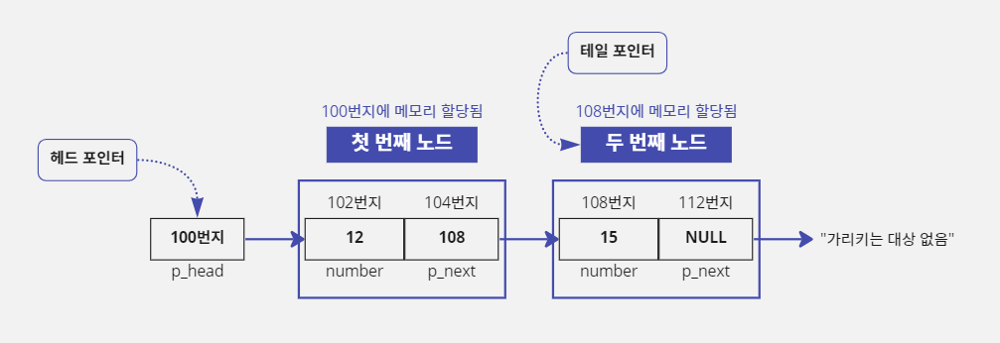
- 따라서 새로 추가한 노드(마지막 노드)의 주소 값을
p_tail포인터가 기억하므로 노드가 추가될 때마다 마지막 노드를 찾기 위해 탐색할 필요가 없다. - 즉 앞에서 구성한
AddNumber함수에서는 마지막 노드를 찾기 위해 다음 반복문이 필요했지만 테일 포인터를 사용하도록 만든AddNumber함수에서는 이 반복문이 사라졌다. - 그래서 프로그램이 훨씬 효율적이 된다.
while(NULL != p->p_next) p = p->p_next; // 마지막 노드를 탐색하는 반복문이 필요하지 않음
연결 리스트의 전체 노드 제거하기
- 이렇게 동적으로 할당된 노드들은
free함수를 호출하여 메모리를 해제할 때까지 유지된다. - 따라서 프로그램이 끝날 때 동적으로 할당된 노드를 모두 제거하는 작업을 추가해야 한다.
- 이 작업은 연결 리스트를 구성하는 노드를 탐색하면서 하나씩 노드를 제거해야 하므로 앞에서 설명한 마지막 노드를 찾는 작업과 비슷하다.
- 즉 첫 노드부터 마지막 노드까지 반복하면서 노드의 주소 값을 저장하기 위해 할당된 메모리를 하나씩 해제하면 된다.
- 아래 코드처럼 너무 단순하게 생각해서 코드를 다음과 같이 구성하면 문제가 생긴다.
NODE *p = p_head;
// 시작 노드부터 마지막 노드까지 이동하도록 반복문을 구성함
while(NULL != p) {
free(p); // 포인터 변수 p가 가리키는 노드를 삭제함
p = p->p_next; // 오류 발생: 다음 노드로 이동할 수 없음
}
- 앞의 코드는 포인터 변수
p를 사용해서 연결 리스트를 구성하는 첫 노드부터 마지막 노드까지 찾는 작업은 잘 구성하였다. - 하지만
free함수를 호출한 시점에 문제가 있다. - 왜냐하면
free(p);를 수행하면 포인터 변수p가 가리키고 있던 메모리가 해제되는데 이 해제된 메모리에 다음 노드의 주소 값을 기억하고 있던p_next도 포함되어 있기 때문이다. - 즉 이미 해제된 메모리를 사용하려고 해서 오류가 발생한 것이다.
1. while 반복문 수행 전 상황
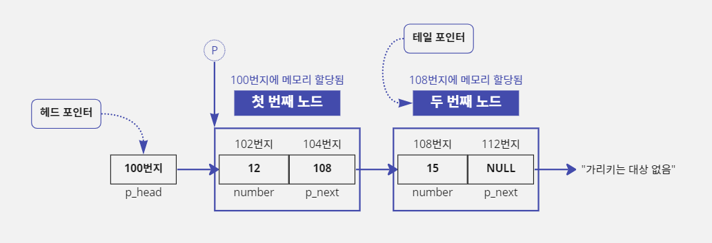
2. free(p);가 수행됨. 포인터 변수 p가 가리키는 대상이 메모리에서 해제됨
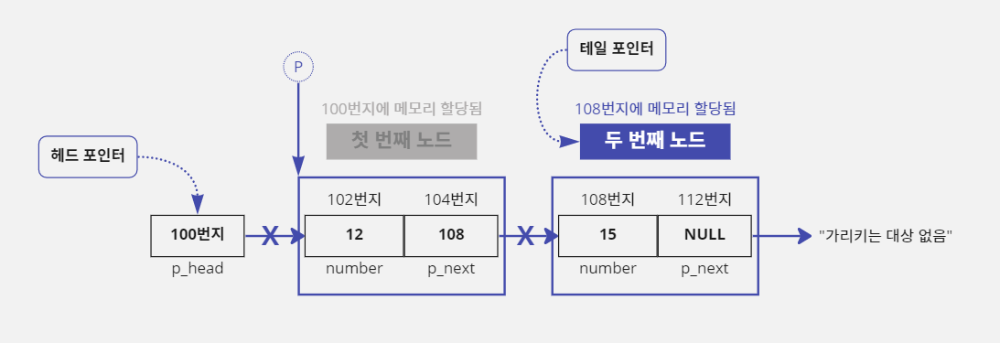
3. p = p->p_next;가 수행됨
- 포인터
p가 가리키던 대상 메모리가 해제되었기 때문에 108번지가 들어 있던p_next를 사용할 수 없다. - 이미 해제된 메모리를 사용하려니까 오류가 발생한다.
- 이 문제를 해결하려면
p가 가리키는 대상 메모리를 해제하기 전에p->p_next에 저장된 주소값을 다른 포인터 변수로 옮겨 놓고 해제하면 된다.
NODE *p = p_head, *p_save_next;
// 시작 노드부터 마지막 노드까지 이동하도록 반복문을 구성함
while(NULL != p) {
p_save_next = p->p_next; // p->p_next 값을 다른 포인터 변수에 보관함
free(p); // 포인터 변수 p가 가리키는 노드를 삭제함
p = p_save_next; // 다음 노드로 옮김
} // while문이 끝났다는 것은 연결 리스트의 모든 노드가 제거되었다는 뜻이다
p_head = p_tail = NULL; // 연결 리스트의 시작과 끝이 모두 없음을 명시함
헤드 포인터로 연결 리스트의 전체 노드를 제거할 수 있다
- 포인터를 두 개(
p,p_save_next)나 추가로 선언해서 사용하는 것이 마음에 들지 않는다면 연결 리스트 구성을 위해 사용하고 있던 헤드 포인터를 활용해도 된다.- 위의 예시 코드에서
p의 역할을p_head포인터가 대신하고p_save_next의 역할을p가 대신하도록 만드는 것이다.NODE *p; // 시작 노드부터 마지막 노드까지 이동하도록 반복문을 구성함 while(NULL != p_head) { p = p_head->p_next; // p_head->p_next 값을 포인터 변수 p에 보관함 free(p_head); // 포인터 변수 p_head가 가리키는 노드를 삭제함 p_head = p; // 다음 노드로 옮김 } p_tail = p_head; // 반복문을 빠져나오면 p_head값은 NULL이므로 p_tail값도 NULL로 변경함
연결 리스트로 더하기 프로그램 만들기
- 여러 개의 숫자를 입력 받아서 합산하는 프로그램(16-5에서 작성)에 연결 리스트를 추가하여 소스 코드를 수정해 보자.
- 이렇게 작업하면 사용자에게 몇 개의 숫자를 사용할 것인지 묻지 않고 바로 사용자가 입력한 숫자들을 합산해서 출력할 수 있다.
/* 사용자에게 숫자를 입력 받아 합산해 출력하기 */
#include <stdio.h>
#include <malloc.h> // malloc, free 함수를 사용하기 위해 추가함
typedef struct node {
int number; // 정수 값을 저장할 변수
struct node *p_next; // 다음 노드를 가리킬 포인터
} NODE;
/// 기존 연결 리스트에 노드가 없는 경우 이 함수로 전달된 p_head와 p_tail값을 수정해야 하므로
/// AddNumber를 호출할 때 p_head, p_tail 포인터 변수의 주소 값을 넘겨준다.
/// 따라서 1차원 포인터의 주소 값을 받아서 사용해야 하므로 두 개의 2차원 포인터를 사용한다.
void AddNumber(NODE **pp_head, NODE **pp_tail, int data) {
/// AddNumber 함수를 호출할 때 전달 받은 p_head 포인터에 저장된 주소 값을 의미한다.
/// 이 값이 NULL이면 기존 연결 리스트에 노드가 없다는 뜻이다.
if (NULL != *pp_head) {
/// *pp_tail 이라고 사용하면 AddNumber를 호출할 때 사용한 p_tail 포인터에 저장된 주소 값을 의미한다.
/// 이 값은 마지막 노드의 주소이다.
(*pp_tail)->p_next = (NODE *) malloc(sizeof(NODE)); // 새 노드를 할당함
*pp_tail = (*pp_tail)->p_next; // p_tail(*pp_tail)에 새 노드의 주소 값을 저장함
} else {
// p_head값이 NULL이라서 첫 노드가 추가됨. p_head값에 직접 대입함
*pp_head = (NODE *) malloc(sizeof(NODE)); // 새 노드를 할당함
*pp_tail = *pp_head; // 새 노드의 주소 값을 p_tail(*pp_tail)에 저장함
}
(*pp_tail)->number = data; // 새 노드의 number에 data값을 저장함
(*pp_tail)->p_next = NULL; // 다음 노드가 없음을 명시함
}
void main() {
// 노드의 시작과 끝을 기억할 포인터
NODE *p_head = NULL, *p_tail = NULL, *p;
int sum = 0, temp;
while (1) { // 무한 루프: 중간에 9999를 누르면 종료함
printf("숫자를 입력하세요(9999를 누르면 종료) :");
scanf("%d", &temp);
if (9999 == temp) break; // 9999를 누르면 입력을 중단함
// 노드의 시작과 끝을 기억하는 포인터의 주소 값과 입력된 숫자를 전달함
AddNumber(&p_head, &p_tail, temp);
}
/// 입력된 숫자를 출력하기 위해서 노드를 탐색할 포인터에 시작 노드의 주소 값을 대입한다.
/// p_head를 직접 사용하면 시작 노드의 위치를 잃어 버린다.
p = p_head;
while (NULL != p) {
if (p != p_head) printf(" + "); // 숫자와 숫자 사이에 +를 출력함
printf(" %d ", p->number); // 입력한 숫자를 출력함
sum = sum + p->number; // 입력한 숫자들을 합산함
p = p->p_next; // 다음 노드로 이동함
}
printf(" = %d\n", sum); // 합산 값을 출력함
while (NULL != p_head) { // p_head 값이 NULL이 될 때까지 반복함
p = p_head; // 현재 노드를 삭제하기 위해 p 변수에 노드 주소 값을 저장함
p_head = p_head->p_next; // 시작 위치를 다음 노드로 옮김
free(p); // 기억했던 주소를 사용하여 노드를 삭제함
}
p_tail = p_head; // 반복문을 나오면 p_head 값은 NULL. p_tail 값도 NULL로 변경함
}
숫자를 입력하세요(9999를 누르면 종료) :5
숫자를 입력하세요(9999를 누르면 종료) :8
숫자를 입력하세요(9999를 누르면 종료) :9
숫자를 입력하세요(9999를 누르면 종료) :4
숫자를 입력하세요(9999를 누르면 종료) :3
숫자를 입력하세요(9999를 누르면 종료) :2
숫자를 입력하세요(9999를 누르면 종료) :6
숫자를 입력하세요(9999를 누르면 종료) :55
숫자를 입력하세요(9999를 누르면 종료) :9999
5 + 8 + 9 + 4 + 3 + 2 + 6 + 55 = 92